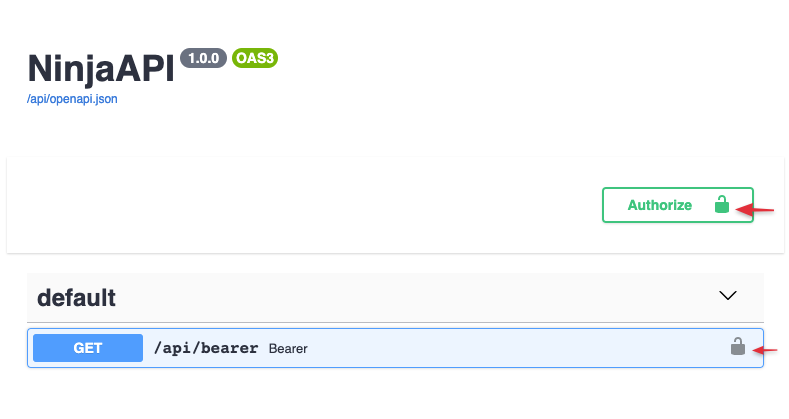
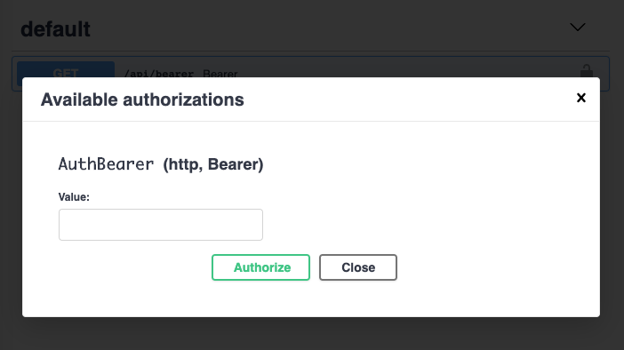

Authentication
Intro
Django Ninja provides several tools to help you deal with authentication and authorization easily, rapidly, in a standard way, and without having to study and learn all the security specifications.
The core concept is that when you describe an API operation, you can define an authentication object.
from ninja import NinjaAPI
from ninja.security import django_auth
api = NinjaAPI(csrf=True)
@api.get("/pets", auth=django_auth)
def pets(request):
return f"Authenticated user {request.auth}"
In this example, the client will only be able to call the pets method if it uses Django session authentication (the default is cookie based), otherwise an HTTP-401 error will be returned.
Automatic OpenAPI schema
Here's an example where the client, in order to authenticate, needs to pass a header:
Authorization: Bearer supersecret
from ninja.security import HttpBearer
class AuthBearer(HttpBearer):
def authenticate(self, request, token):
if token == "supersecret":
return token
@api.get("/bearer", auth=AuthBearer())
def bearer(request):
return {"token": request.auth}
Now go to the docs at http://localhost:8000/api/docs.

Now, when you click the Authorize button, you will get a prompt to input your authentication token.

When you do test calls, the Authorization header will be passed for every request.
Global authentication
In case you need to secure all methods of your API, you can pass the auth argument to the NinjaAPI constructor:
from ninja import NinjaAPI, Form
from ninja.security import HttpBearer
class GlobalAuth(HttpBearer):
def authenticate(self, request, token):
if token == "supersecret":
return token
api = NinjaAPI(auth=GlobalAuth())
# @api.get(...)
# def ...
# @api.post(...)
# def ...
And, if you need to overrule some of those methods, you can do that on the operation level again by passing the auth argument. In this example, authentication will be disabled for the /token operation:
from ninja import NinjaAPI, Form
from ninja.security import HttpBearer
class GlobalAuth(HttpBearer):
def authenticate(self, request, token):
if token == "supersecret":
return token
api = NinjaAPI(auth=GlobalAuth())
# @api.get(...)
# def ...
# @api.post(...)
# def ...
@api.post("/token", auth=None) # < overriding global auth
def get_token(request, username: str = Form(...), password: str = Form(...)):
if username == "admin" and password == "giraffethinnknslong":
return {"token": "supersecret"}
Available auth options
Custom function
The "auth=" argument accepts any Callable object. NinjaAPI passes authentication only if the callable object returns a value that can be converted to boolean True. This return value will be assigned to the request.auth attribute.
def ip_whitelist(request):
if request.META["REMOTE_ADDR"] == "8.8.8.8":
return "8.8.8.8"
@api.get("/ipwhiltelist", auth=ip_whitelist)
def ipwhiltelist(request):
return f"Authenticated client, IP = {request.auth}"
API Key
Some API's use API keys for authorization. An API key is a token that a client provides when making API calls to identify itself. The key can be sent in the query string:
GET /something?api_key=abcdef12345
or as a request header:
GET /something HTTP/1.1
X-API-Key: abcdef12345
or as a cookie:
GET /something HTTP/1.1
Cookie: X-API-KEY=abcdef12345
Django Ninja comes with built-in classes to help you handle these cases.
in Query
from ninja.security import APIKeyQuery
from someapp.models import Client
class ApiKey(APIKeyQuery):
param_name = "api_key"
def authenticate(self, request, key):
try:
return Client.objects.get(key=key)
except Client.DoesNotExist:
pass
api_key = ApiKey()
@api.get("/apikey", auth=api_key)
def apikey(request):
assert isinstance(request.auth, Client)
return f"Hello {request.auth}"
In this example we take a token from GET['api_key'] and find a Client in the database that corresponds to this key. The Client instance will be set to the request.auth attribute.
Note: param_name is the name of the GET parameter that will be checked for. If not set, the default of "key" will be used.
in Header
from ninja.security import APIKeyHeader
class ApiKey(APIKeyHeader):
param_name = "X-API-Key"
def authenticate(self, request, key):
if key == "supersecret":
return key
header_key = ApiKey()
@api.get("/headerkey", auth=header_key)
def apikey(request):
return f"Token = {request.auth}"
in Cookie
from ninja.security import APIKeyCookie
class CookieKey(APIKeyCookie):
def authenticate(self, request, key):
if key == "supersecret":
return key
cookie_key = CookieKey()
@api.get("/cookiekey", auth=cookie_key)
def apikey(request):
return f"Token = {request.auth}"
HTTP Bearer
from ninja.security import HttpBearer
class AuthBearer(HttpBearer):
def authenticate(self, request, token):
if token == "supersecret":
return token
@api.get("/bearer", auth=AuthBearer())
def bearer(request):
return {"token": request.auth}
HTTP Basic Auth
from ninja.security import HttpBasicAuth
class BasicAuth(HttpBasicAuth):
def authenticate(self, request, username, password):
if username == "admin" and password == "secret":
return username
@api.get("/basic", auth=BasicAuth())
def basic(request):
return {"httpuser": request.auth}
Multiple authenticators
The auth argument also allows you to pass multiple authenticators:
from ninja.security import APIKeyQuery, APIKeyHeader
class AuthCheck:
def authenticate(self, request, key):
if key == "supersecret":
return key
class QueryKey(AuthCheck, APIKeyQuery):
pass
class HeaderKey(AuthCheck, APIKeyHeader):
pass
@api.get("/multiple", auth=[QueryKey(), HeaderKey()])
def multiple(request):
return f"Token = {request.auth}"
In this case Django Ninja will first check the API key GET, and if not set or invalid will check the header key.
If both are invalid, it will raise an authentication error to the response.
Router authentication
Use auth argument on Router to apply authenticator to all operations declared in it:
api.add_router("/events/", events_router, auth=BasicAuth())
or using router constructor
router = Router(auth=BasicAuth())
Custom exceptions
Raising an exception that has an exception handler will return the response from that handler in the same way an operation would:
from ninja import NinjaAPI
from ninja.security import HttpBearer
api = NinjaAPI()
class InvalidToken(Exception):
pass
@api.exception_handler(InvalidToken)
def on_invalid_token(request, exc):
return api.create_response(request, {"detail": "Invalid token supplied"}, status=401)
class AuthBearer(HttpBearer):
def authenticate(self, request, token):
if token == "supersecret":
return token
raise InvalidToken
@api.get("/bearer", auth=AuthBearer())
def bearer(request):
return {"token": request.auth}
See Handling errors for more information.